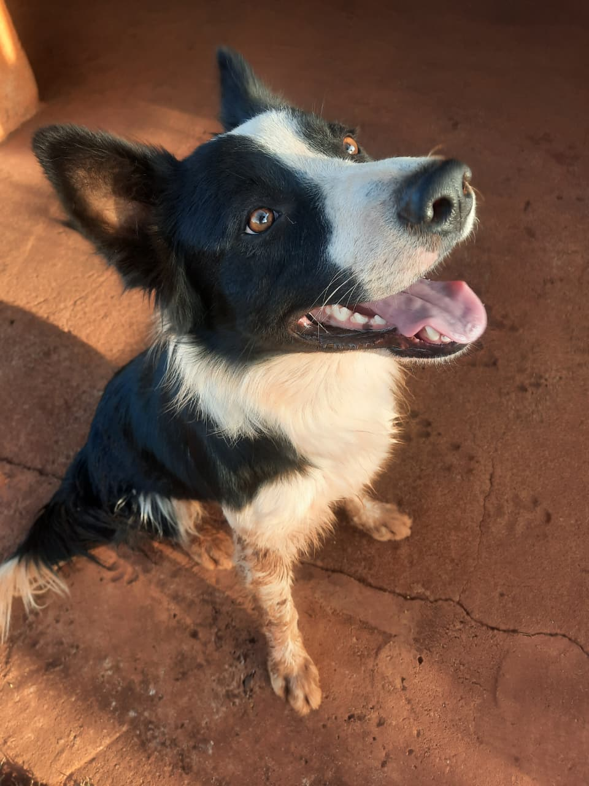

Quem sou eu?

Bom dia, boa tarde e boa noite! Me chamo Gustavo Luiz Gordoni. Sou técnico em informática pelo Instituto Federal de São Paulo - IFSP (Campus Votuporanga), e atualmente curso Bacharelado em Sistemas de Informação na mesma instituição.
Nascido e criado em Mira Estrela, uma cidade pequena localizada no noroeste do estado de São Paulo. Desde cedo, desenvolvi um interesse por tecnologia da informação, o que me levou a iniciar minha carreira na área.
Tempo Livre
Em determinados momentos que tenho do meu tempo livre, gosto de estar com meus familiares, assistir a determinados vídeos no YouTube, jogar alguns jogos e brincar com meu cachorro Zeus.

Alguns fatos sobre ter um cachorro Border Collie
Ter um cachorro da raça Border Collie é uma experiência bem interessante, na minha opinião. Eles são conhecidos por sua inteligência excepcional, energia inesgotável e habilidades de pastoreio.
Entretando, prepare-se para sentir pena deles: a pelagem densa faz com que sofram bastante com o calor.
Entre em contato
- GitHub: github.com/gustavogordoni
- Email: gustavo.gordoni@aluno.ifsp.edu.br
- LinkedIn: linkedin.com/in/gustavo-gordoni